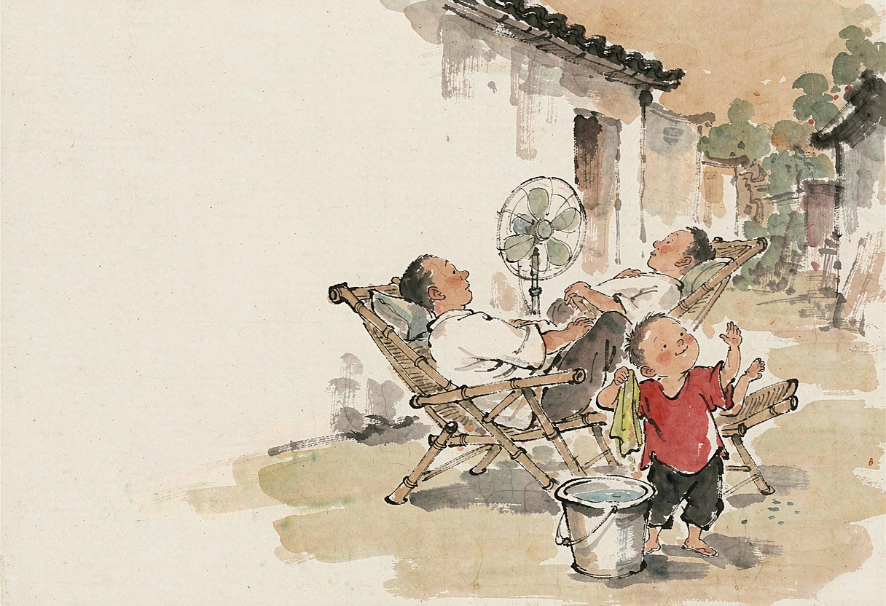

这几天，上海热得像个蒸笼，太阳肆意倾洒炽热，把大地烤得滚烫。路边的树木、花草都耷拉着脑袋，人们纷纷躲进屋里，外面只剩下毒辣辣的日头。
可小时候，石库门弄堂的夏天却满是别样生机，那是记忆中最珍贵的宝藏。
那时候，上海人讲究“乘风凉”，这不只是简单消暑，更是一种独特的社交仪式，承载着浓浓的邻里情谊。
傍晚时分，夕阳余晖渐渐褪去，地面依旧热得发烫。大人们开始忙碌起来，第一件事便是“圈地”。只见一位大叔提一桶刚从井里打上来的水，“刺啦”一声泼在地上，瞬间地面冒起白烟，热气升腾，仿佛在宣告纳凉时光开启。不一会儿，温度渐降，弄堂热闹起来。
家中有华生电扇的，那可是稀罕物件，小心翼翼拉出家里电线接上电扇。电扇“呼呼”转动，那凉风仿佛带着无形力量，宣告：“这块地方是我家的。”
小孩们调皮捣蛋，看到摇头晃脑的电扇叶片，像看到新奇玩具，忍不住冲上去，张嘴“啊”地大叫，或扯着嗓子唱不成调的歌词。声音随扇叶转动一抖一抖，充满童真欢乐，说不定“抖音”名称灵感就来自这儿。
各家小菜桌子陆续摆出，简单饭菜散发诱人香气，那是家的味道，也是弄堂的烟火气息。吃罢晚饭，弄堂纳凉时光正式拉开帷幕。
孩子们闲不住，像欢快小鸟在弄堂穿梭嬉戏。“跳房子”是他们喜爱的游戏之一。他们在弄堂地面用粉笔歪歪扭扭画出方格，方格像神秘城堡，等待征服。游戏前，大家争先恐后找扁平小石子当“棋子”，仿佛石子是开启游戏大门的钥匙。第一个孩子小心翼翼将石子轻轻扔进第一个方格，然后单脚跳跃，依次跳过有石子的方格，准确跳进空方格。每一步都小心翼翼，眼睛紧盯脚下，生怕踩线或摔倒。顺利跳完一轮，便兴奋得满脸通红，大声欢呼，声音仿佛要冲破弄堂天空；不小心失误，就懊恼跺脚，乖乖排到队伍后面等下一次机会。周围小伙伴加油声、欢笑声此起彼伏，小小弄堂充满生机活力，仿佛变成欢乐海洋。
男孩子们热衷斗蟋蟀，这是夏日一大盛事。他们早早准备好小竹笼，养着精心挑选的蟋蟀。这些蟋蟀像小战士，承载着他们的荣耀与梦想。傍晚纳凉时，大家把小竹笼带到弄堂，找平坦地方，将两只蟋蟀放进小瓦罐。一声令下，两只蟋蟀振翅鸣叫，张牙舞爪扑向对方，像英勇将军在战场激烈厮杀。孩子们围在瓦罐周围，眼睛紧盯“战斗”，嘴里不停喊：“加油！咬它！”有的孩子紧张得双手握拳，额头冒出细密汗珠；有的兴奋得跳起来，仿佛自己就是获胜蟋蟀。一场激烈“战斗”结束，获胜孩子得意洋洋炫耀蟋蟀，像凯旋而归的英雄；失败孩子不服气约好下次再战，眼神透露出坚定执着。
大人们喜欢围坐一起，摇着蒲扇，聊家长里短。老人们是故事主角，像活历史书，肚子里装着无数故事。他们会讲年轻时的经历，那些艰苦却充满奋斗的岁月。“那时候啊，日子苦得很，一家人挤在一间小屋子里，夏天没有电风扇，只能靠一把蒲扇过夜。晚上，蚊子多得像乌云一样，扇也扇不走，只能用被子把自己裹得严严实实的，可还是热得难受。”老人们一边说，一边轻轻摇着蒲扇，仿佛回到那个年代，眼神透露出对过去的怀念与感慨。孩子们围在老人身边，听得津津有味，时不时提出问题，好奇的眼神像夜空中闪烁的星星。除了回忆过去，大人们还聊当下生活，谁家孩子考上好学校，谁家生意红火，这些话题让弄堂气氛更加热烈，仿佛一团燃烧的火焰，温暖着每个人的心。有时候，还会有人讲神秘传说，什么弄堂里曾出现过的鬼怪，什么老房子里隐藏的宝藏，听得孩子们既害怕又好奇，紧紧依偎在大人身边，仿佛在大人怀里才能找到安全感。
到了十点多，夜渐深，大家陆续回去睡觉。也有人在外一觉睡到天亮，只是肚脐眼一定要用毯子盖住，不能露出来，这是老一辈传下来的规矩，千万不能着凉。
过去的上海，物质匮乏，要啥没啥，可人们却仿佛有着无穷的快乐。邻里之间互帮互助，那浓浓的人情味，就像夏夜里的凉风，沁人心脾。如今，上海物质丰富，要什么有什么，高楼大厦如雨后春笋般拔地而起，科技发展让生活更便捷。可似乎又缺了点什么，是那井水泼地的烟火气？是那摇着蒲扇聊天的闲适？还是那邻里之间毫无隔阂的亲近？
（本文刊登在2025.8.12《杨浦时报》）